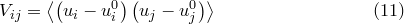
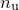
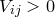
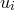
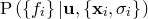
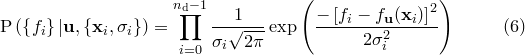
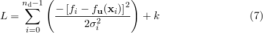
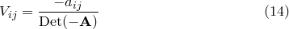
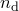

The terms of the covariance matrix  are defined by:
are defined by:
|  | (C.8) |
Its leading diagonal terms may be recognised as equalling the variances of each of our  variables; its cross terms measure the correlation between the variables. If a component , it implies that higher estimates of the coefficient  make higher estimates of  more favourable also; if , the converse is true.
It is a standard statistical result that . In the remainder of this section we prove this; readers who are willing to accept this may skip onto Section C.5.
Using  to denote
to denote  , we may proceed by rewriting Equation () as:
, we may proceed by rewriting Equation () as:
 |
 |
 |
(C.9) | ||
 |
|
 |
The normalisation factor in the denominator of this expression, which we denote as  , the partition function, may be evaluated by -dimensional Gaussian integration, and is a standard result:
, the partition function, may be evaluated by -dimensional Gaussian integration, and is a standard result:
 |
|
 |
(C.10) | ||
|
|
 |
Differentiating  with respect of any given component of the Hessian matrix
with respect of any given component of the Hessian matrix  yields:
yields:
![\begin{equation} -2 \frac{\partial }{\partial A_{ij}} \left[ \log _ e(Z) \right] = \frac{1}{Z} \idotsint _{u_ i=-\infty }^{\infty } \Delta u_ i \Delta u_ j \exp (-Q) \, \mathrm{d}^{n_\mathrm {u}}\mathbf{u} \end{equation}](images/img-0815.png) |
(C.11) |
which we may identify as equalling :
 |
|
![$\displaystyle -2 \frac{\partial }{\partial A_{ij}} \left[ \log _ e(Z) \right] $](images/img-0817.png) |
(C.12) | ||
|
|
![$\displaystyle -2 \frac{\partial }{\partial A_{ij}} \left[ \log _ e((2\pi )^{n_\mathrm {u}/2}) - \log _ e(\mathrm{Det}(\mathbf{-A})) \right] \nonumber $](images/img-0818.png) |
|||
|
|
![$\displaystyle 2 \frac{\partial }{\partial A_{ij}} \left[ \log _ e(\mathrm{Det}(\mathbf{-A})) \right] \nonumber $](images/img-0819.png) |
This expression may be simplified by recalling that the determinant of a matrix is equal to the scalar product of any of its rows with its cofactors, yielding the result:
![\begin{equation} \frac{\partial }{\partial A_{ij}} \left[\mathrm{Det}(\mathbf{-A})\right] = -a_{ij} \end{equation}](images/img-0820.png) |
(C.13) |
where  is the cofactor of . Substituting this into Equation () yields:
is the cofactor of . Substituting this into Equation () yields:
|  | (C.14) |
Recalling that the adjoint of the Hessian matrix is the matrix of cofactors of its transpose, and that  is symmetric, we may write:
 |
(C.15) |
which proves the result stated earlier.